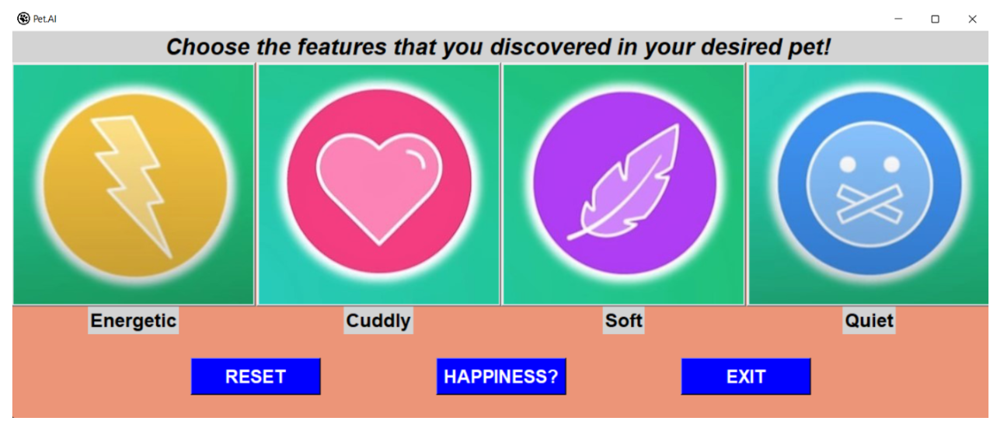

Projects

Pet.AI
Pet.AI is a software runs on AI module and predict if the user will be happy or not buying a pet. However, this AI module is biased and it plays as an example to show the importance of Ethical Aspect while building any AI module.
The data provided have a correlated feature and the AI detected patterns that we didn't expected.